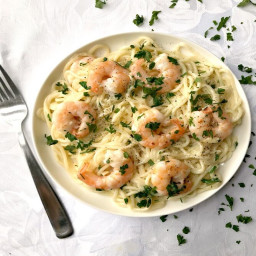

Shrimp Alfredo Pasta

What is this gift from god?
Alfredo sauce is a classic cream sauce used in countless pasta dishes.
Also known as a white sauce or “pasta in blanco”, alfredo blends
simple ingredients and turns them into a rich, indulgent delight.
What goes with shrimp alfredo? Shrimp Alfredo is a rich, creamy,
and savory dish that can be used as any course of the meal.
If you are choosing to have it as the main course,
you can pair some steamed broccoli, asparagus, side salad,
or a crunchy buttery piece of garlic bread.
Ingredients
- 1/2 lb. medium shrimp, peeled and deveined
- 1/2 lb. fetuccine
- 2 Tbsp butter, divided
- 4 cloves garlic, minced
- 1 cup heavy cream
- 3/4 cup Parmesan
- 1/8 tsp salt
- 1/4 tsp freshly cracked pepper
- 1 Tbsp chopped fresh parsley
Instructions / Steps to Perfecting
-
If your shrimp is frozen, thaw and peel before beginning.
You can remove the tails or leave the tails on, if you prefer.
-
Bring a pot of water to a boil for the fettuccine. Once boiling, add the fettuccine and boil until tender (7-10 minutes).
Reserve a ½ cup of the starchy water before draining the pasta in a colander.
- While the fettuccine is boiling, prepare the shrimp and alfredo sauce.
Place the peeled shrimp on a cutting board and pat dry with a paper towel.
Season the shrimp with a pinch of salt and pepper.
-
Add 1 tablespoon butter to a large skillet and heat over medium. Once hot, swirl to coat the surface of the skillet with butter. Add the shrimp and cook for 1-2 minutes on each side, or just until opaque and pink (do not overcook the shrimp).
Transfer the cooked shrimp to a clean bowl.
-
Reduce the heat to medium-low. Add 1 tablespoon butter to the skillet along with the minced garlic.
Sauté the garlic for 1-2 minutes, or just until it is very fragrant but not brown.
-
Add the heavy cream to the skillet and whisk to dissolve any browned bits
off the bottom of the skillet.
Allow the cream to come up to a simmer.
-
Whisk the Parmesan into the hot cream until melted. Season the sauce with salt and pepper.
-
Add the cooked and drained pasta and cooked shrimp back to the skillet with the sauce (make sure to add any liquid from the bowl of shrimp).
Toss everything until coated in sauce.
If the sauce becomes too thick or dry, add some of the reserved pasta water to loosen it up.
-
Taste the pasta and add more salt or pepper if needed. Top with chopped fresh parsley and serve!